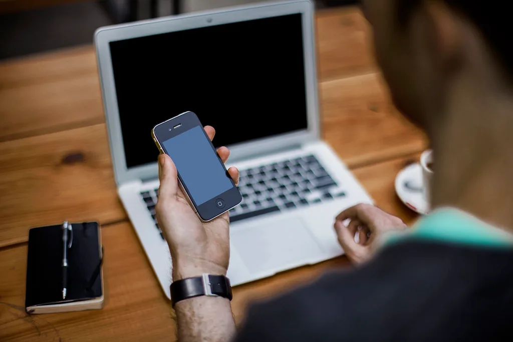
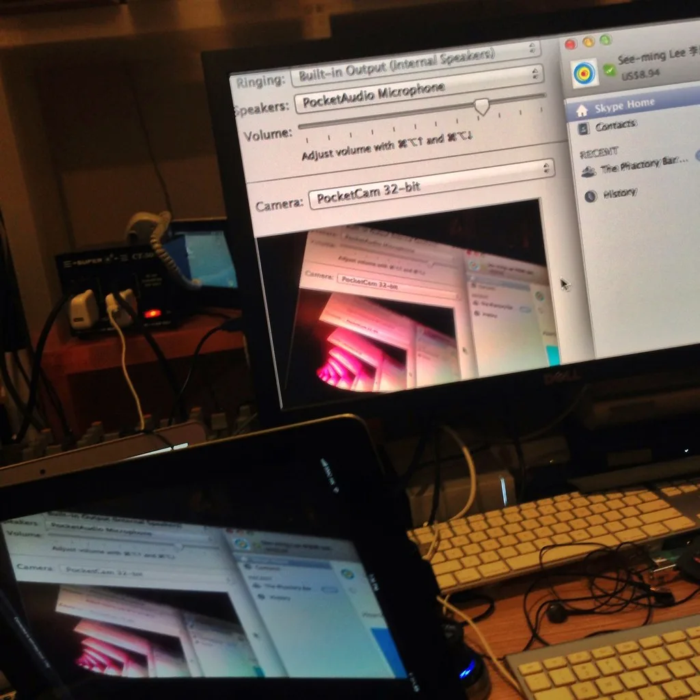

아이폰18 프로 '패닉풀' 국내 1500건 교환…애플 "원인은 기밀"
애플 아이폰18 프로·프로맥스 시리즈가 국내 출시 이후 이른바 '패닉풀' 현상으로 1500건에 이르는 교환과 50건의 환불을 처리한 것으로 확인됐다. 패닉풀은 기기를 사용하는 도중 갑자기 화면이 꺼졌다가 수초 후 저절로 재부팅되는 현상을 가리키는 말로, 출시 열흘 만에 이 같은 대규모 교환이 이뤄졌다는 사실이 알려지며 소비자들 사이에서 불안감이 커졌다.
문제의 원인은 페이스ID 인증 실패와 관련이 있는 것으로 파악됐다. 비밀번호가 설정된 애플리케이션에 페이스ID로 접근하려다 첫 인증에 실패한 뒤 다시 인증을 시도하면, 일부 기기에서 화면 터치가 작동하지 않고 멈췄다가 몇 초 뒤 강제로 재부팅되는 오류가 발생하는 것으로 전해졌다. 200만원에 가까운 고가 제품에서 이런 현상이 반복되자 구매자들 사이에서는 "믿고 사기 어렵다"는 불만이 이어졌다.

애플은 문제가 불거진 이후 지난달 29일 해당 오류를 수정한 iOS 27.0.1 업데이트를 배포했다. 애플 측은 "문제의 원인이 되는 소프트웨어 오류를 확인하고 이를 해결한 업데이트를 배포했다"고 설명했지만, 구체적인 발생 원인에 대해서는 "세부 정보는 기밀정보에 해당해 제출하기 어렵다"는 입장을 고수했다. 수많은 소비자가 피해를 겪은 사안임에도 근본 원인을 공개하지 않는 애플의 태도를 두고 비판의 목소리가 커지고 있다.
소프트웨어 업데이트 이후 교환·환불 정책도 논란이 되고 있다. 애플은 iOS 27.0.1로 패닉풀 문제가 해소된 기기는 더 이상 교환이나 환불 대상으로 인정하지 않겠다는 방침을 세웠다. 이 때문에 일부 소비자들 사이에서는 "업데이트를 하면 오히려 환불받을 권리를 잃는 것 아니냐"는 우려가 제기됐고, 업데이트 적용 시점과 교환·환불 신청 시점을 둘러싼 혼선도 빚어지고 있는 상황이다.

이번 사태는 아이폰18 프로 시리즈가 국내에서 첫 폴더블 모델 등 신기술을 앞세워 대대적인 주목을 받으며 출시된 지 얼마 되지 않은 시점에 불거졌다는 점에서 더욱 파장이 크다. 고가 플래그십 제품에서 반복적으로 기기가 꺼지는 현상이 발생했다는 사실 자체가 품질 신뢰도에 타격을 줄 수 있다는 지적이 나온다. 일부 이용자들은 환불까지 받으며 제품에 대한 불신을 드러낸 것으로 전해졌고, 온라인 커뮤니티에서는 저마다 겪은 증상과 서비스센터 대응 경험을 공유하는 글이 잇따라 올라왔다.
소비자단체와 통신업계에서는 애플이 원인 규명 결과를 투명하게 공개하고, 업데이트 이전에 문제를 겪은 소비자들에 대해서도 폭넓은 교환·환불 기준을 적용해야 한다는 목소리를 내고 있다. 이번 패닉풀 사태가 애플의 국내 애프터서비스 정책과 소비자 대응 방식에 대한 신뢰 문제로 확산될지 업계의 관심이 모아지고 있다.
국내 이동통신 유통업계에서는 이번 사태로 애플 서비스센터의 교환·환불 상담 창구가 한동안 북적였다는 전언도 나온다. 신제품 초기 불량 이슈는 과거에도 종종 있었지만, 이번처럼 교환 건수가 단기간에 1500건에 달한 사례는 이례적이라는 평가다. 업계에서는 애플이 향후 비슷한 소프트웨어 결함이 발생했을 때 보다 신속하게 원인을 공개하고 선제적인 대응에 나서야 한다는 지적이 이어지고 있다.